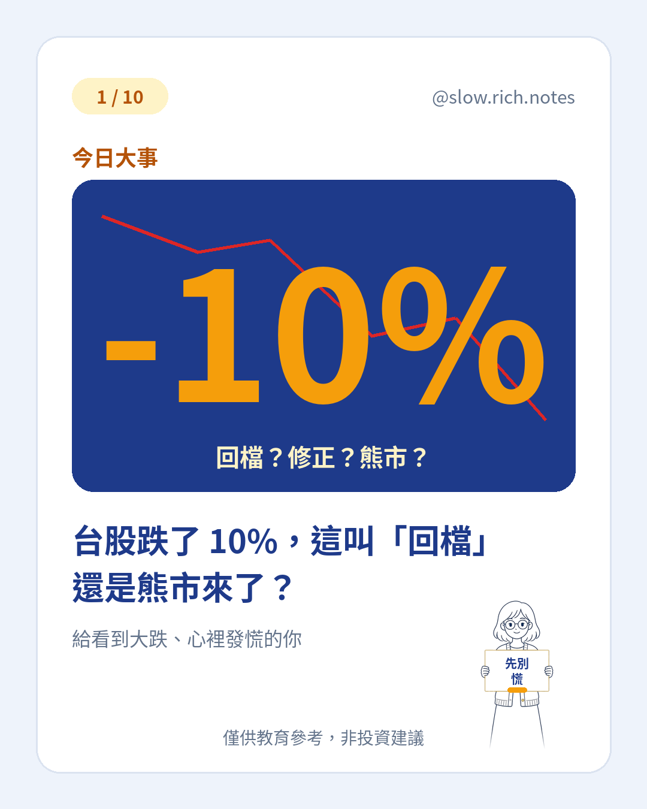

刷到「黑色星期一」、心裡一沉，又聽說台股從高點跌超過 10%？先喘口氣——標題可以熱，答案可以冷靜。台股自約 10/6 高點約 49,968 跌超過約 10%，媒體稱「技術性回檔」；外資 10 月賣約 9,943 億創單月紀錄，散戶卻越跌越買，台股 ETF 淨申購仍大。（數字為約數，會變動。）
先分清楚三個詞（市場慣用約數，不是官方硬定義）：回檔＝從高點跌約 10%，漲多休息，很常見；修正＝跌約 10%～20%，比較痛；熊市＝跌約 20% 以上，而且跌很久。名字只告訴你「跌了多少」，不告訴你「明天會怎樣」。
帶回去三句：不慌——先確認投入的是閒錢；不急抄底——沒人知道底在哪；定期定額——照原本紀律走，不因新聞忽然加碼或停扣。「市場短期是投票機，長期是秤重機。」
想把基礎補齊，可先看 看不懂財經新聞？先學這 10 個詞，以及同在談大跌心態的 融資斷頭是什麼（那篇講槓桿規則；這篇講跌幅名詞）。現金流怎麼排，可對照 月薪也能慢慢存起來。準備好了再領 《投資新手入門清單》。
僅供教育參考，非投資建議；數字為約數、會變動；投資有風險，可能損失本金。
⚠️ 僅供教育參考，非投資建議。文中若有數字，皆為假設例子，請依自己的狀況調整。投資有風險，請自行評估。